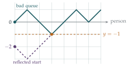

I am selling raffle tickets for £1 per ticket. In the queue for tickets, there are \(m\) people each with a single £1 coin and \(n\) people each with a single £2 coin. Each person in the queue wants to buy a single raffle ticket and each arrangement of people in the queue is equally likely to occur. Initially, I have no coins and a large supply of tickets. I stop selling tickets if I cannot give the required change.
In the case \(n = 1\) and \(m \geq 1\), find the probability that I am able to sell one ticket to each person in the queue.
By considering the first three people in the queue, show that the probability that I am able to sell one ticket to each person in the queue in the case \(n = 2\) and \(m \geq 2\) is \(\dfrac{m - 1}{m + 1}\).
Show that the probability that I am able to sell one ticket to each person in the queue in the case \(n = 3\) and \(m \geq 3\) is \(\dfrac{m - 2}{m + 1}\).
The hook
The pattern is irresistible: \(\frac{m}{m+1}\), \(\frac{m-1}{m+1}\), \(\frac{m-2}{m+1}\). Surely, with \(n\) people holding £2 coins, the answer is \(\frac{m - n + 1}{m + 1}\). It is, and the slickest proof is one of the most elegant ideas in combinatorics: the reflection principle. It turns a hard count (queues that never run out of change) into an easy one by reflecting part of a picture in a line.
The same problem has many disguises: an election count in which the winner is never behind (Bertrand’s ballot problem of 1887), a gambler who never goes broke, brackets that match correctly. When \(m = n\) the count gives the Catalan numbers, perhaps the most frequently occurring sequence in combinatorics after the binomial coefficients.
Before you start
Each £1 customer gives you a coin; each £2 customer takes one away (as change). When do you get stuck?
Keep track of the number of £1 coins you hold. It goes up by \(1\) for each £1 customer and down by \(1\) for each £2 customer. You are stuck exactly when a £2 customer arrives and you hold no coins: the count would go to \(-1\). So you succeed if and only if, at every point in the queue, the number of £1 customers so far is at least the number of £2 customers so far.
Working it through
Stage 1 One £2 coin
With \(n = 1\), you fail only if the £2 customer is first. The £2 customer is equally likely to be in any of the \(m + 1\) positions, so \[\mathrm{P}(\text{success}) = 1 - \frac{1}{m + 1} = \frac{m}{m + 1}. \qed\]
Stage 2 Two £2 coins
The first person must have a £1 coin. What can happen with the second person, and in each case, what situation are you left in?
The first person has a £1 coin with probability \(\frac{m}{m+2}\); otherwise you fail at once. Then you hold one coin, and the remaining queue has \(m - 1\) £1 people and two £2 people.
If the second person has a £1 coin (probability \(\frac{m-1}{m+1}\)), you hold two coins, enough to change both £2 coins whenever they come. Success is certain.
If the second person has a £2 coin (probability \(\frac{2}{m+1}\)), you are back to no coins, with \(m - 1\) £1 people and one £2 person left. By part (i) with \(m - 1\) in place of \(m\), you succeed with probability \(\frac{m-1}{m}\).
So \[\mathrm{P}(\text{success}) = \frac{m}{m + 2}\Bigl(\frac{m - 1}{m + 1} + \frac{2}{m + 1}\cdot\frac{m - 1}{m}\Bigr) = \frac{m}{m + 2}\cdot\frac{m - 1}{m + 1}\cdot\frac{m + 2}{m} = \frac{m - 1}{m + 1}. \qed\]
Try the same approach for \(n = 3\). It works, but the cases multiply. Is there a way to count the successful queues all at once?
Stage 3 Queues as paths
Draw the number of coins you hold against the number of people served. What does a queue look like? What does a successful queue look like?
A queue is a path made of \(m\) up-steps (£1) and \(n\) down-steps (£2), starting at height \(0\) and ending at height \(m - n\). There are \(\binom{m + n}{n}\) such paths, all equally likely. A queue is successful exactly when its path never goes below \(0\). So we need to count the bad paths, those that touch height \(-1\).
Stage 4 The reflection
Take a bad path. Find the first moment it touches \(-1\), and reflect the part of the path before that moment in the line \(y = -1\). Where does the new path start, and where does it end?
The reflected path starts at \(-2\) (the mirror image of \(0\) in the line \(y = -1\)) and ends where the original did, at \(m - n\) (Figure 9.10.1). Conversely, every path from \(-2\) to \(m - n\) must cross \(y = -1\) somewhere (it starts below and ends above, since \(m \geq n\)); reflecting it before its first visit gives back a bad path from \(0\). So bad paths from \(0\) correspond exactly to all paths from \(-2\) to \(m - n\).
A path from \(-2\) to \(m - n\) in \(m + n\) steps rises by \(m - n + 2\), so it has \(m + 1\) up-steps and \(n - 1\) down-steps: there are \(\binom{m + n}{n - 1}\) of them. Hence \[\mathrm{P}(\text{failure}) = \frac{\binom{m + n}{n - 1}}{\binom{m + n}{n}} = \frac{n!\,m!}{(n - 1)!\,(m + 1)!} = \frac{n}{m + 1},\] and \[\mathrm{P}(\text{success}) = 1 - \frac{n}{m + 1} = \frac{m - n + 1}{m + 1}.\] With \(n = 3\) this is \(\frac{m - 2}{m + 1}\).■

Looking back
Find the right state. The only thing that mattered was the number of coins held, which turned the queue into a walk.
Condition on the first steps. Parts (i) and (ii) were done by asking what the first few people do, reducing to smaller cases.
Count the complement by a bijection. The bad paths were hard to count directly, but reflection matched them with a set that was easy to count.
What’s really going on
Catalan numbers
When \(m = n\) (exactly enough £1 coins), the number of successful queues is \[\binom{2n}{n} - \binom{2n}{n - 1} = \frac{1}{n + 1}\binom{2n}{n},\] the \(n\)th Catalan number \(C_n\): \(1, 1, 2, 5, 14, 42, 132, \ldots\). Richard Stanley’s book Catalan Numbers lists more than two hundred different things that they count. Among them: the number of ways to arrange \(n\) pairs of brackets correctly (“\((())()\)” is allowed, “\(())(()\)” is not, by exactly the coin argument with “\((\)” as £1 and “\()\)” as £2), the number of ways to cut a polygon with \(n + 2\) sides into triangles by non-crossing diagonals, and the number of ways to bracket a product of \(n + 1\) factors.
Random walks
Queues are random walks, and the reflection principle is one of the basic tools for studying them. It shows, for example, that a fair random walk starting at \(0\) is certain to return to \(0\) eventually, and that the probability that it stays strictly positive for the first \(2n\) steps is \(\frac{1}{2}\binom{2n}{n}2^{-2n} \approx \frac{1}{2\sqrt{\pi n}}\). In continuous form, the same reflection argument applied to Brownian motion gives the distribution of its maximum. This is the basis of the pricing of certain financial options, whose payoff depends on whether a share price ever crosses a barrier.
In 1887 Joseph Bertrand asked: in an election where candidate \(A\) receives \(a\) votes and \(B\) receives \(b < a\), what is the probability that \(A\) is strictly ahead throughout the count? The answer, \(\frac{a - b}{a + b}\), was proved in the same year by Désiré André, whose argument is usually remembered as the reflection principle (although historians have pointed out that André’s actual proof used a slightly different bijection). Our raffle problem is a variant in which ties are allowed: success means the £1 count never falls below the £2 count. One of the exercises deduces Bertrand’s answer from ours.
The thinking skill
To count a set, find a one-to-one correspondence with a set you can count.
Reflection matched bad queues with unrestricted paths from a different start. Bijections are the most satisfying proofs in combinatorics, because they explain why two numbers are equal rather than just showing that they are. At university you will meet bijective proofs throughout combinatorics, and the reflection principle again in the study of random walks and Brownian motion.
Try this next
Three by cases. Prove part (iii) by conditioning on the first people in the queue, as in part (ii), to see how much work the reflection principle saves.
Bertrand’s ballot. In an election, \(A\) gets \(a\) votes and \(B\) gets \(b < a\). Show that the probability that \(A\) is strictly ahead throughout the count is \(\frac{a - b}{a + b}\). (Hint: the first vote must be for \(A\); after that, \(A\) must never fall behind \(B\) by more than….)
Brackets. List the \(5\) correct arrangements of three pairs of brackets, and the \(5\) ways to cut a pentagon into triangles. Can you find a bijection between them?
A £5 note. A queue contains \(m\) people with £1 coins and \(n\) with £5 notes, for a ticket costing £1. Explain why the reflection principle no longer gives a simple answer. (This generalisation is much harder.)
Further reading
William Feller, An Introduction to Probability Theory and Its Applications, Vol. 1 (Wiley), Chapter III. The classic treatment of random walks and the reflection principle.
Richard Stanley, Catalan Numbers (Cambridge University Press). Over two hundred interpretations, with exercises.
Marc Renault, “Lost (and found) in translation: André’s actual method and its application to the generalized ballot problem”, American Mathematical Monthly 115 (2008). The history of the reflection principle.